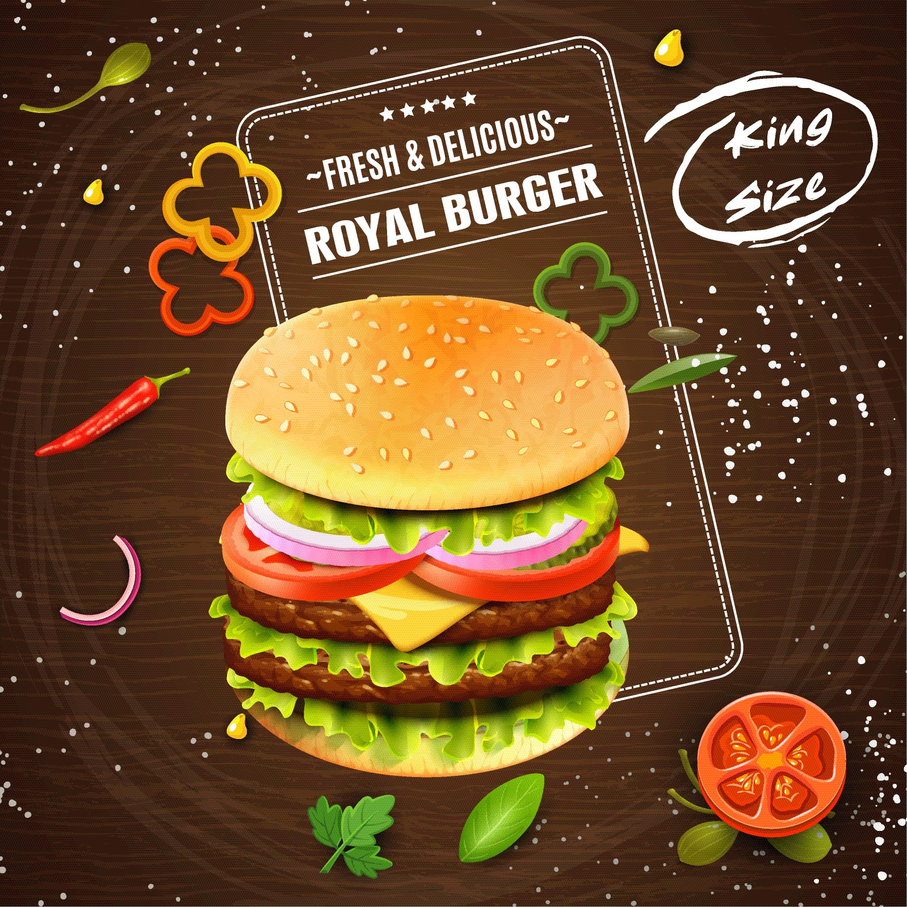

Focusing on affordability The benefits of providing an interesting choice are embodied by the success of Zomato Gold. We are leaving no stone unturned when it comes to making food more affordable without compromising on the profitability of a given restaurant.Affordability is assessed as the number of days' wages required by the lowest-paid unskilled government worker to purchase 7 days' supply of a medicine to treat an acute condition, and 30 days for a chronic condition, based on standard treatment regimens. The affordability analysis expresses the survey results in a slightly different way. The cost of a course therapy for important conditions is compared with the daily wage of the lowest-paid unskilled government worker, instead of comparing medicine prices with an index price. It serves as an advocacy tool because it expresses prices in relation to an individual's ability to pay for medicines. It allows explaining to policy-makers that the cost of a month's treatment for a specific condition with medicine x would require 10.5 days of wages with originator brands and 6.3 days of wages for generic medicines.
Boosting accessibility for customers Our delivery service is reaching more and more cities. We are actively growing our services - table reservation, food@work for corporate catering and are continuing to power Feeding India. Accessibility is the practice of making your websites usable by as many people as possible. We traditionally think of this as being about people with disabilities, but the practice of making sites accessible also benefits other groups such as those using mobile devices, or those with slow network connections. You might also think of accessibility as treating everyone the same, and giving them equal opportunities, no matter what their ability or circumstances. Just as it is wrong to exclude someone from a physical building because they are in a wheelchair (modern public buildings generally have wheelchair ramps or elevators), it is also not right to exclude someone from a website because they have a visual impairment. We are all different, but we are all human, and therefore have the same human rights.
Improving quality of food We are committed to nurturing a neutral platform and are helping food establishments maintain high standards through Hyperpure. Food Hygiene Ratings is a coveted mark of quality among our restaurant partners.
Document Made By Rohan Gupta